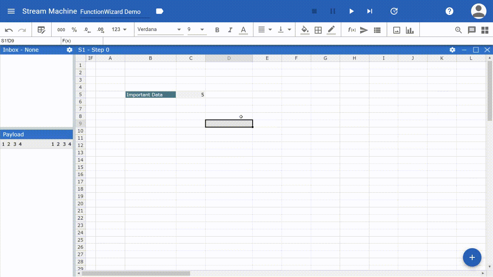
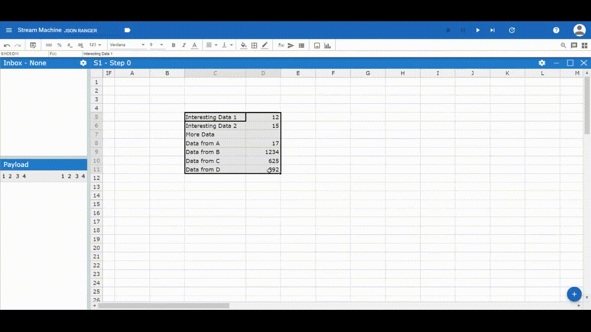
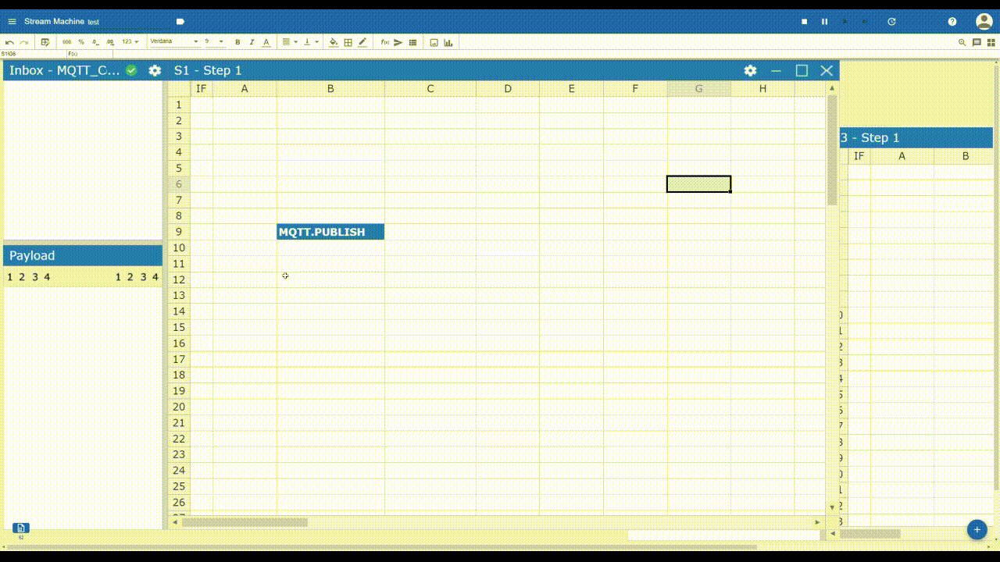

UI Elements¶
Charts¶
{kind=link}
Function Wizard¶
Usually Functions are created by entering “=” followed by the name of the function in a cell. This process is supported by the function inline help, which prompts suggestions and parameter support.
To further simplify the creation of functions the function wizard was added. The Fuction Wizard supports mainly the creation of so called Stream Functions. These are functions which use a Stream (Producer/Consumer) to communicate with entities outside of a Stream Machine and usually are of a more complex structure than regular functions.
To open the function Wizard select the cell, where the function should be inserted and click in the top bar on the Function Wizard Icon. The Wizard will open on the right side of your screen. Now first select the Stream Function followed by the Stream. Depending on the chosen Stream Function a set of different other parameter is required.
When finished click “Ok” to eventually create the function.
 Create a MQTT.PUBLISH function with the Function Wizard
{kind=link}
JSON Range¶
Streamsheets are using the JSON format to transfer and process data. Creating a JSON-Range in a Streamsheet helps you to easly structure your data keys in a hierarchical order. This is needed when you are about to transmit data and need it structured in a certain way. In a Streamsheet this is possible by writing all your key value pairs below each other. After (or before) you are done, select all cells and right-click. Choose “Define JSON-Range” on the bottom of the menu. Now you can start structuring your data using TAB and Shift+TAB to change the hierarchy of a key value pair.
 Create a JSON Range
{kind=link}
{“Interesting Data 1”:12,“Interesting Data 2”:15,“More Data”:{“Data from A”:17,“Data from B”:1234,“Data from C”:625,“Data from D”:892}}IF Column¶
 Add a condition to a whole row
{kind=link}